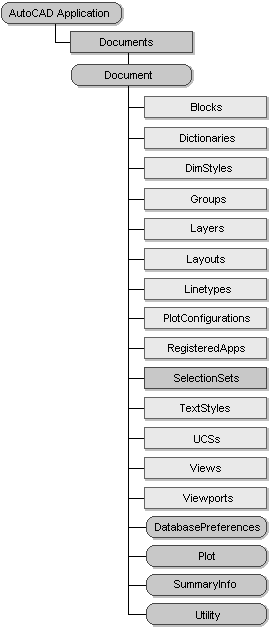

Autodesk AutoCAD 2021: ActiveX Developer's Guide > ActiveX Automation Basics > About the AutoCAD Object Model (VBA/ActiveX) >
The Document object, which is actually an AutoCAD drawing, is found in the Documents collection and provides access to all of the graphical and most of the nongraphical AutoCAD objects.
Access to the graphical objects (lines, circles, arcs, and so forth) is provided through the ModelSpace and PaperSpace collections, and access to nongraphical objects (layers, linetypes, text styles, and so forth) is provided through like-named collections such as Layers, Linetypes, and TextStyles. The Document object also provides access to the Plot and Utility objects.
To access drawing properties, use the SummaryInfo property of the Document object.
